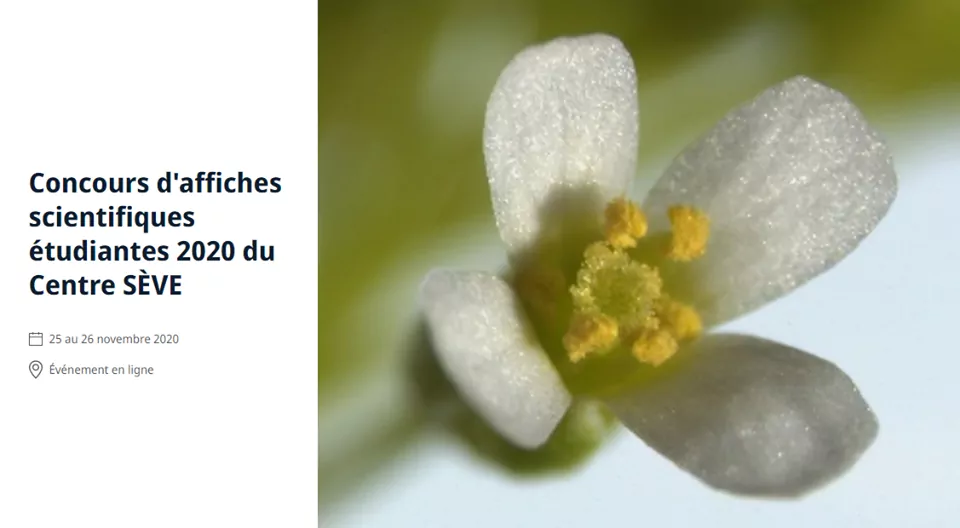

Aussi, le candidat au doctorat Charles
Roussin-Léveillée du laboratoire du Dr. Peter
Moffet a publié sa recherche dans la revue Cells Host & Microbe.
Voici leur publication:
Notre trésorière Julie
Yergeau vient de finir sa maîtrise titré « L’identification des
espèces de Phytophthora dans les cultures d’arbres de Noël du
Québec et la validation de la pathogénicité de P. abietivora »
!
En plus, elle a gagné le prix de meilleure présentation dans les
Symposiums MicroBioMoléculaires de la Session Automne 2021 à
l’Université de Sherbrooke.
Félicitations, Julie!
2021-11-24
Notre Vice-Président en Réseautage Romaric
Armel Mouafo Tchinda a réussi son doctorat en phytopathologie, avec
la thèse « Comparative epidemiology of the two main clades of Plasmopara
viticola prevalent in eastern Canada » avec la Dre. Carole Beaulieu et
le Dr. Odile Carisse.
Félicitations à toutes les personnes impliquées dans ce projet pour
leur travail assidu et en particulier à la Dre Isabel
Desgagné-Penix pour sa collaboration avec des chercheurs du monde
entier !
2021-08-30
Voulez vous savoir plus sur les defis des postdocs, la vie d’une
bioinformaticienne, ou le parcours academique de notre présidente, Dre
Karen
Cristine Goncalves?
Regardez son entrevue par le doctorant Nikunj Sharma, de l’Université
du Québec à Trois-Rivières!
2021-05-05
Notre présidente, Karen
Cristine Goncalves, a réussi son doctorat en Biologie Cellulaire et
Moléculaire avec la thèse “Unrelated Fungal Rust Candidate Effectors Act
on Overlapping Plant Functions”, sous la direction du Dr. Hugo
Germain et la Dre. Isabel
Desgagné-Penix.
Bien que l’année 2021 ne fasse que commencer, les chercheur·euse·s
membres du Centre SÈVE ont été très occupé·e·s. Félicitations pour leur
excellent travail durant cette pandémie !
Bienvenue à nos deux nouvelles membres de la CIPCS, Snehi Gazal
(VP Communications) and Valeria
Parra (VP Réseautage)!
Nous remercions [Claire Lettaneur], Teura Barff
et Marianne
Bessette pour leur travail. Elles ne feront plus partie du comité
exécutif, mais elles seront toujours invitées à nos réunions et nos
événements.
2021-01-27
Félicitation à Michelle Boivin (UQTR), étudiante du centre SÈVE pour
son intriguant projet de revalorisation de matière organique.
Nous sommes heureux de vous inviter au Concours d’affiches
scientifiques étudiantes 2020 du Centre SÈVE. Cet événement virtuel aura
lieu les 25 et 26 novembre 2020. Le portail
d’inscription pour les participants et pour soumettre une
communication par affiche est maintenant en ligne. Vous y trouverez
aussi toutes les informations
sur l’événement.
Au plaisir de vous y voir en grand nombre !

2020-09-22
Conférence Web du Centre SÈVE aujourd’hui, avec Charles
Roussin-Léveillée de l’Université de Sherbrooke. Merci à tous les
participants! Source: Centre
SÈVE
Felicitations aux etudiants du Centre SEVE qui presentent dans le
Worldwide Plant Biology Summit 2020. Vous pouvez voir leurs affiches sur
notre twitter (link en bas).
Fatima
Awwad, postdoc de l’UQTR, nous a presenté
aujourd’hui le potentiel des microalgues dans les conférences Web du
Centre SÈVE. Merci à tous les participants!
Félicitations à Claire
Letanneur, doctorante à l’UQTR, pour l’octroi
d’une subvention au premier concours du programme DIALOGUE - volet
relève étudiante! Seulement quatre projets étaient sélectionnés pour
chaque secteur de recherche des FRQ.
2019
2019-09-30
Nous rémercions Rose-Marie Bell, étudiante à la maitrise en biologie
vegetale à l’Université Laval, pour avoir partagé son experience au
SYMPOSIUM
INTERNATIONAL DU CENTRE SÈVE 2019 dans le journal étudiant
L’Agral.
Une soixantaine de participant·e·s et de conférencier·ière·s ont pu
partager leurs connaissances, échanger et tisser des liens sur le thème
de « La biotechnologie au service de la sécurité alimentaire
».
Objectif atteint pour ce premier symposium organisé par les étudiants
du CPICS !
Merci encore une fois aux commanditaires de l’événement :
La durée prévue par présentation est de 10 minutes,
suivi de 5 minutes de questions.
Compte tenu de la portée internationale du symposium, l’anglais
sera priorisé comme langue de présentation et de soumission des résumés.
Cependant le français sera aussi accepté.
La décision prise par le Comité sera communiquée à chaque auteur
au plus tard le lundi 2 août 2019.
Vous y trouverez aussi le planning de la journée et bien plus, alors
ne tardez plus.
Nous avons hâte de vous y voir.
2019-03-14
Après une longue période d’attente, nous avons enfin le plaisir de
vous présenter le Comité de Partenariat du Centre SÈVE
(CPICS). Comme vous le savez nous aspirons à l’établissement de
partenariats avec des chercheurs du monde entier. Nous sommes d’ailleurs
en pleine préparation du SYMPOSIUM
INTERNATIONAL DU CENTRE SÈVE 2019 qui portera cette année
sur « La biotechnologie au service de la sécurité alimentaire
».
Restez à l’affût pour plus d’informations sur le symposium, mais
aussi pour en savoir plus sur les recherches menées au sein du Centre
SÈVE ainsi qu’à l’extérieur du Québec et d’autre nouvelles palpitantes
dans le monde de la science.
En attendant nous vous laissons avec cette belle photo qui liste tous
les membres du bureau exécutif du CPICS de cette année.